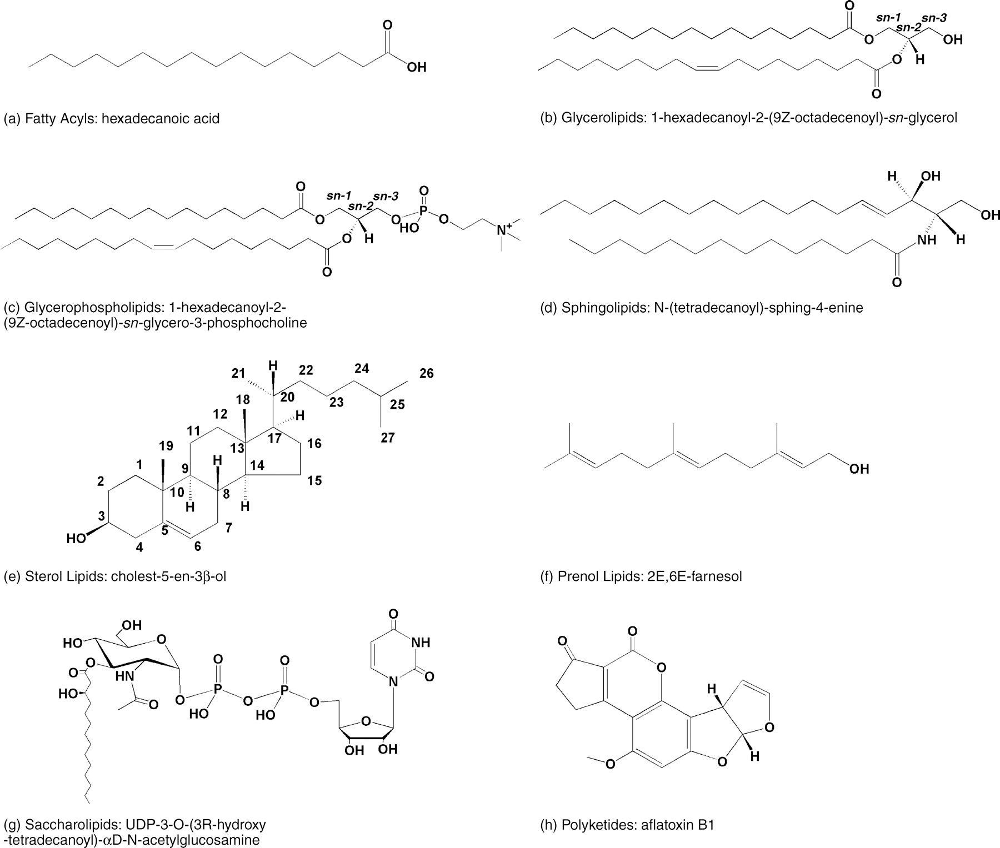
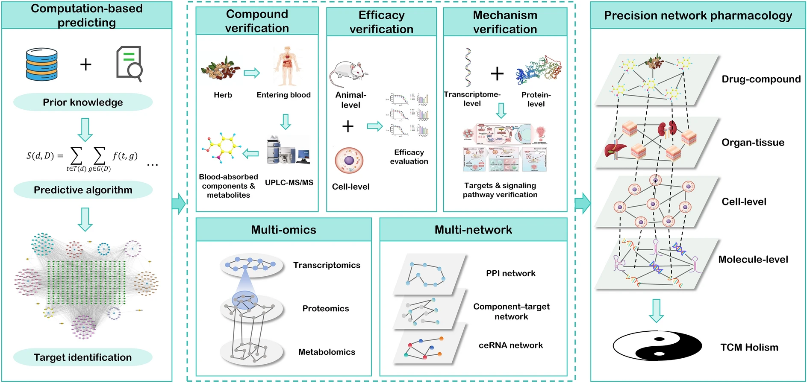

Research
Research
Interests
Investigating how traditional medicinal herbs treat chronic inflammatory diseases through a polychemical, multi-target, systems pharmacology approach — and mapping how complex lipid metabolism is dysregulated in those same diseases.
Chronic inflammatory diseases — neurodegeneration, inflammatory bowel disease, and other age-related conditions — are multifactorial in their pathology, driven by many interconnected pathways simultaneously. Western medicine's "one-target, one-drug" model is insufficient for this complexity: block a single node and the body adapts, compensatory pathways engage, and the result is a weakened therapeutic response and potentially toxic adverse effects from sustained target suppression.
My primary interest is breaking from this reductionist model by applying traditional medicinal herbs from across the world to treat chronic inflammatory diseases through a polychemical, multi-target (polypharmacology), systems pharmacology approach. I study how multi-component natural products perturb protein and lipid networks simultaneously — using proteome-wide profiling (CETSA-MS, HDX-MS), interaction metabolomics, and network pharmacology to resolve the distributed mechanisms of polypharmacology and emergent synergy.
A complementary interest involves the understudied dysregulation of complex lipid metabolism in chronic inflammatory disease — both as a diagnostic and prognostic layer, and as a window into how medicinal herb interventions reshape disease-associated lipid networks. Together, these two arms form a closed loop: understand how lipid–protein networks are dysregulated, then design and validate multi-target herbal interventions that restore them.
The WE Medicine Paradigm
Western medicine excels at reductionist precision — isolating single targets, developing potent selective compounds. But this approach has proven insufficient for complex, heterogeneous diseases associated with aging, where tissue phenotype heterogeneity, adaptive resistance, and multi-system dysregulation resist single-target solutions. Long-term use of highly potent, selective compounds also carries the risk of delayed toxicity, as the same targets driving pathology often play essential roles in normal physiology.
Eastern medicine — exemplified by Traditional Chinese Medicine — has long operated on the opposite intuition: multi-component formulas acting on multiple targets simultaneously, holistic rather than reductive, calibrated to the whole person across their lifetime. The intuition is right. Thousands of years of accumulated clinical experience encode real pharmacological signal. But the mechanistic resolution has been lacking — it has been difficult to explain why these formulas work in terms that integrate with modern molecular medicine.
The convergence of these two traditions — rigorous Western systems biology applied to Eastern multi-target pharmacology — defines the emerging paradigm of WE Medicine: the melting of W and E into a unified approach capable of meeting the unmet medical needs of aging and chronic disease. Through his efforts, Trevor hopes to further Professor Yung-Chi Cheng's vision of this convergence.
Cheng, Y. C., Cheng, P., Liu, S. H., Lam, W., Guan, F., Hu, R., & Cheng, W. (2019). The evolution of future medicine — WE Medicine — to meet unmet medical needs. Novel Approaches in Cancer Study, 3(5), NACS.000572. https://doi.org/10.31031/NACS.2019.03.000572 ↗
Why Study Lipids?
The diversity of lipids is on the same order of magnitude as that of proteins, yet they remain far less studied than proteins or nucleic acids. They are not passive structural components — they are dynamic regulators of membrane organization, receptor function, organelle identity, and inflammatory signaling. Lipid composition shifts measurably with age, and dysregulation of specific lipid species and metabolic enzymes is increasingly recognized as a driver — not merely a consequence — of chronic inflammatory disease, neurodegeneration, and metabolic dysfunction. Despite this, most disease research still treats the lipidome as a downstream readout rather than a causal layer worth targeting directly.

Representative structures for the eight major lipid categories defined by the LIPID MAPS classification system — illustrating the structural diversity that underlies their distinct biological functions. Licensed under CC BY 4.0. Figure from: Fahy, E., Subramaniam, S., Brown, H. A., Glass, C. K., Merrill, A. H., Murphy, R. C., Raetz, C. R. H., Russell, D. W., Seyama, Y., Shaw, W., Shimizu, T., Spener, F., van Meer, G., VanNieuwenhze, M. S., White, S. H., Witztum, J. L., & Dennis, E. A. (2005). A comprehensive classification system for lipids. Journal of Lipid Research, 46(5), 839–861. https://doi.org/10.1194/jlr.E400004-JLR200 ↗

Framework for precision network pharmacology — from computational target prediction and compound verification through multi-omics and multi-network analysis to spatially resolved, systems-level TCM holism. Licensed under CC BY 4.0. Figure from: Zhai, Y., Liu, L., Zhang, F., Chen, X., Wang, H., Zhou, J., Chai, K., Liu, J., Lei, H., Lu, P., Guo, M., Guo, J., & Wu, J. (2025). Network pharmacology: A crucial approach in traditional Chinese medicine research. Chinese Medicine, 20(1), 8. https://doi.org/10.1186/s13020-024-01056-z ↗
Workflow
Research Pipeline
The sequential logic connecting target selection to in vivo validation — a multi-step pipeline for discovering, characterizing, and validating multi-target herbal interventions in chronic inflammatory disease.
Target Identification
Unbiased multi-omics profiling comparing disease and wild-type phenotypes — drawing on published proteomics, lipidomics, and transcriptomics datasets to identify dysregulated targets in chronic inflammatory disease.
Currently in active literature scanning phase. Many datasets are published; well-validated targets are prioritized for downstream screening.
High-Throughput Herbal Screening
Hundreds of herbal extracts assayed against validated targets. Enzymatic assays run at constant substrate concentration with product formation as the primary readout — rapidly identifying active extracts across a broad chemical space.
Bioactive Compound Identification
Bioactivity-guided fractionation of active extracts in cell-free assays — progressively narrowing complex mixtures to the fractions and individual compounds responsible for target modulation.
Target Deconvolution
Proteome-wide cellular thermal shift assay (CETSA-MS) maps the full set of protein targets engaged by active compounds under native cellular conditions — capturing both direct binders and indirect network perturbations propagated across the proteome.
Binding Site Characterization
Quantitative protein–ligand kinetics including binding affinity and rate constants via surface plasmon resonance (SPR), and inhibition or agonism kinetics with Ki and Km derivation via the Cheng-Prusoff equation; hydrogen-deuterium exchange mass spectrometry (HDX-MS) to map compound binding interfaces at the peptide level; molecular docking and dynamics to model and rationalize compound–protein interactions.
Cell-Based Functional Validation
Active compounds evaluated in disease-relevant cellular models. Reporter cell lines provide quantitative, real-time pathway readout; inducible models enable controlled perturbation of specific disease-associated cellular states.
Synergy Analysis
Before proceeding to in vivo studies, interaction metabolomics identifies which compound pairs within complex mixtures drive cooperative, non-additive biological effects — pinpointing synergists from unfractionated or partially fractionated extracts without prior knowledge of active constituents.
In Vivo Assessment
PK/PD characterization and efficacy in animal models; PET neuroimaging for quantitative, real-time brain target engagement and neuroactivity; spatially resolved mass spectrometry to assess disease phenotype resolution, molecular mechanism, and tissue distribution of interventions at the organ and cellular scale.